Everything the team needs to understand, explain, demonstrate and defend EvacPrint in front of the judges. Every statement here was checked against the source code and the running prototype.
Read chapters 1–10 tonight to understand the project. Chapters 11–14 are what you will use on stage. Chapter 18 is the last thing to check before you walk in.
Judges respect honesty. Every feature in this handbook carries one of these labels, so you always know what you can claim.
| Label | Meaning | How to say it |
|---|---|---|
| Implemented | Works in the prototype and was tested while preparing this handbook. | "This is working — let me show you." |
| Partial | Works, but with a stated limit (for example: a draft that must be checked, or a feature not yet tested on real hardware). | "It works, with this limit…" |
| Demo-only | Works for evaluation but is deliberately simplified and labelled as such in the UI (demo login). | "For the prototype we used a local demo version." |
| Needs internet | Needs a network connection and a configured API key (the AI features). | "This part uses Google Gemini through our server." |
| Future | Not built. Only talk about it as future scope. | "A next step would be…" |
What EvacPrint is, the problem it addresses, and what we actually built.
EvacPrint is a browser-based crowd-evacuation simulator. You give it a venue — our default is a model of MSIT Seminar Hall 406 — and a crowd. It runs a virtual emergency in which every person is an independent "agent" who reacts to the alarm, chooses an exit, walks, slows down in crowds and queues at doors. It measures how long the evacuation takes, finds where the crowd jams, and then automatically tests design changes (wider doors, an extra exit, cleared obstacles) to recommend the ones that actually get people out faster.
These numbers are measured by the engine, not typed in. They are reproducible: same seed, same result. They come from a representative model of Hall 406 whose dimensions still need on-site verification, so treat them as comparisons between options, not as certified absolute times.
Every building has an evacuation plan on the wall: a floor plan with green arrows. That plan shows where to go, but it cannot tell you how long it will take, where people will get stuck, or what happens if one exit is blocked by stored chairs. Those answers depend on how real crowds behave — and crowds behave in non-obvious ways: a narrow door creates a queue, a queue slows everyone behind it, and people tend to pick the exit they know rather than the nearest one.
EvacPrint makes those hidden risks visible and measurable before an emergency, using a simulation instead of guesswork.
| Traditional evacuation plan | EvacPrint |
|---|---|
| Static drawing with arrows | A moving crowd of independent agents on the same plan |
| Assumes everyone uses the nearest exit | Agents choose routes by cost and re-route away from queues every 2 s |
| No time estimate | Measures evacuation time (RSET), 50 % and 95 % times, queue time |
| Cannot show congestion | Live density heatmap with automatic bottleneck detection |
| One fixed layout | Tests every applicable design change and ranks them by seconds saved |
| Everyone treated the same | Different speeds, sizes and reaction times; reduced-mobility and wheelchair users |
A venue manager can learn, in minutes and at zero cost, that (for example) leaving equipment in front of Door B costs about 17 extra seconds for 200 people, and that adding one 1-metre exit on the west wall would save more time than any other single change tested. That turns a vague feeling ("this hall feels crowded") into a specific, evidence-backed action item — before anyone is in danger.
| Area | Status | Notes |
|---|---|---|
| Simulation engine (agents, Dijkstra, density, doors) | Implemented | Pure JavaScript, runs in browser, Web Workers and Node |
| 4 Hall 406 scenarios | Implemented | Normal, Blocked exit, Larger crowd, Mixed mobility |
| 2D plan + density heatmap + bottlenecks | Implemented | Canvas 2D, Fruin colour bands |
| Synchronized 3D view | Implemented | Three.js; reads the same live simulation |
| Recommendation engine + before/after | Implemented | 30 full simulations in ~1.5 s in Web Workers |
| Risk analysis, reports, print to PDF | Implemented | Reports stored in browser localStorage |
| Venue Studio: blueprint editor, quick room builder, 10-step wizard | Implemented | Venues stored in browser IndexedDB |
| Floor plan import (PDF/PNG/JPG/SVG/DXF) + calibration + wall tracing | Implemented | Tracing is threshold-based; doors must be added by hand |
| Camera capture | Partial | Implemented (browser camera API) but not tested on the presentation laptop's camera |
| AI blueprint draft from photos / plans | Partial Needs internet | Gemini via our server; output is an editable, unverified draft |
| EvacPrint AI assistant (text) | Implemented Needs internet | Tested live with Gemini; offline rule-based guide if no key is configured |
| Voice input / spoken replies | Partial | Browser Web Speech API; not tested with a real microphone |
| Login / register / recovery / profile | Demo-only | Local to the browser; labelled "Demo authentication" |
| Fire/smoke spread, multi-floor buildings, live sensors | Future | Not simulated; listed as assumptions where relevant |
The gap between an evacuation plan on paper and an evacuation in reality.
Imagine Seminar Hall 406 during a guest lecture: 200 students seated in rows, a stage at the front, three 1-metre doors leading to corridors and stairs. The fire alarm rings. Nobody moves for the first 10–30 seconds — people finish a sentence, pick up bags, look around. Then everyone stands up at once and heads for "their" door. Three 1-metre doors can only let through about 1.33 people per second each. Within seconds, a queue bends into an arch in front of each door. The people at the back of the queue are not walking any more; they are waiting.
Now imagine one of those doors is blocked by stored chairs. Everyone who would have used it must turn around and join another queue. The plan on the wall does not change — but the evacuation got 17 seconds slower in our model, and the crowd at the remaining doors got denser.
Professional evacuation-modelling software exists, but it is typically expensive desktop software operated by specialists. Colleges, small auditoriums and event organisers need something that runs in a browser, uses established crowd-dynamics research, explains its results in plain language, and suggests concrete fixes. That is the gap EvacPrint targets.
Simulate · Predict · Optimize · Protect.
EvacPrint turns a venue into a digital blueprint (a grid of 0.5 m × 0.5 m cells), fills it with virtual people, sounds a virtual alarm and measures what happens. Then it tries design changes on its own and tells you which ones help.
Give anyone responsible for a venue a fast, free, explainable way to answer three questions:
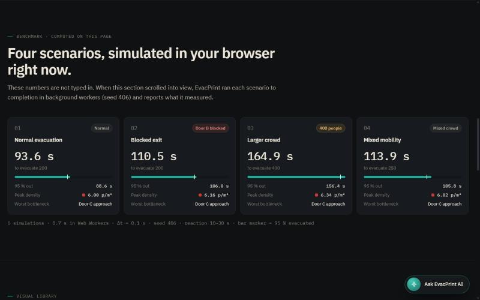
Every feature in the prototype: what it does, why it exists, how it works inside, and how to show it.
The app has eight pages in the top navigation — Overview, Simulator, 3D View, Venues, How It Works, Technology, Learn, Reports — plus Profile (user menu, top right) and the floating Ask EvacPrint AI button on every page.
runBatch() → Web Worker pool → runHeadless() engine runs (seed 406). The panel shows simulated time, evacuated count, peak density and phase.controller owns a single Simulation instance; every view reads it. Scenario definitions live in src/sim/scenarios.js.src/render/floorplan.js). Static linework is cached in offscreen layers; per frame only density, agents and markers are drawn, interpolated between 0.1 s steps.src/render/view3d.js). Geometry is extruded from the same compiled 0.5 m grid; each frame reads agent positions, states, density and exit status from the live simulation. Instanced meshes keep hundreds of figures fast.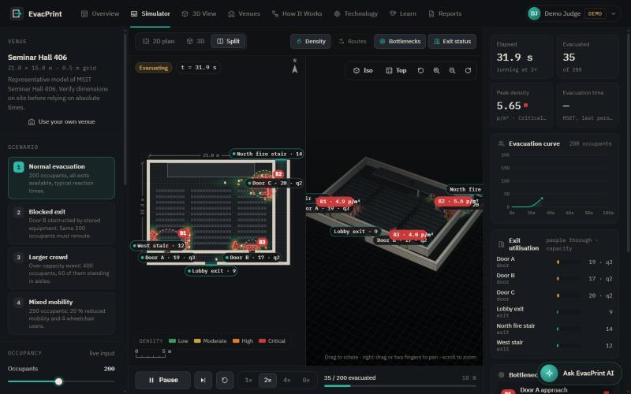
src/render/charts.js); the engine samples the curve every second. All values come from Simulation.summary().src/sim/risk.js — rules applied to the measured run and the layout geometry. Every finding carries the disclaimer: model estimate, not a fire-safety assessment.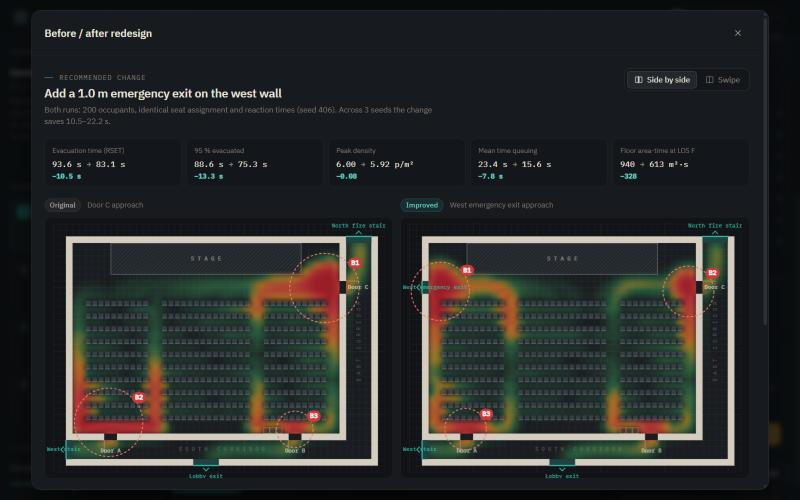
getUserMedia API and was not tested on the presentation laptop's camera.src/venue/editor.js; rasterize() converts shapes to the same 0.5 m grid the engine uses, so a custom venue is simulated by exactly the same engine as Hall 406.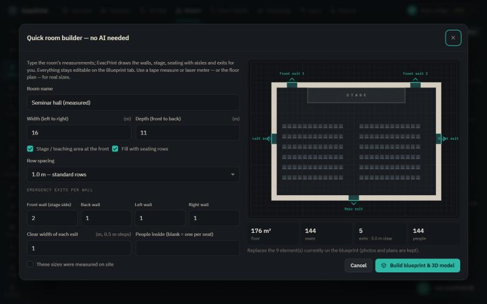
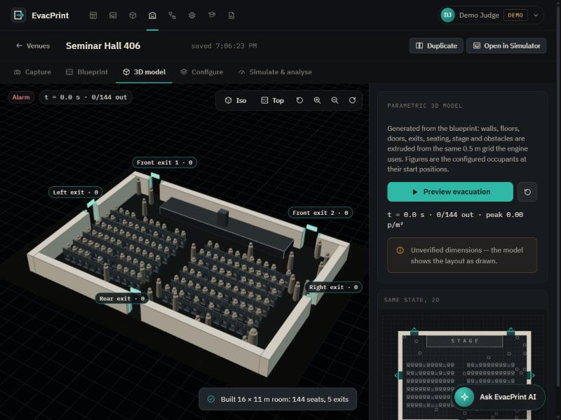
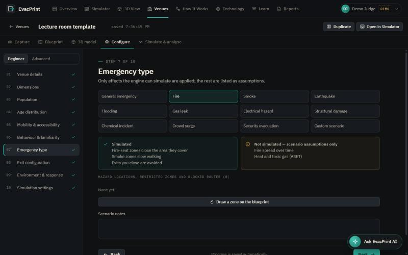
gemini-3.5-flash-lite, automatic fallback to other free models). If an Anthropic Claude key is set instead, Claude is used. Keys stay on the server (.env.local), never in the browser.SpeechRecognition, speechSynthesis) and an AudioContext analyser for the waveform. In Chrome/Edge, speech recognition is processed by the browser vendor's online service, so it needs internet. Not tested with a real microphone — do not rely on it on stage.illustrations/*.svg, rebuilt with npm run illustrations).Sixteen steps from opening the app to reading the report, in beginner-friendly language.
npm run dev) and open the address it prints, e.g. http://localhost:5173. The Overview page loads with a live 3D simulation behind the headline "Every Second Matters. Every Exit Counts."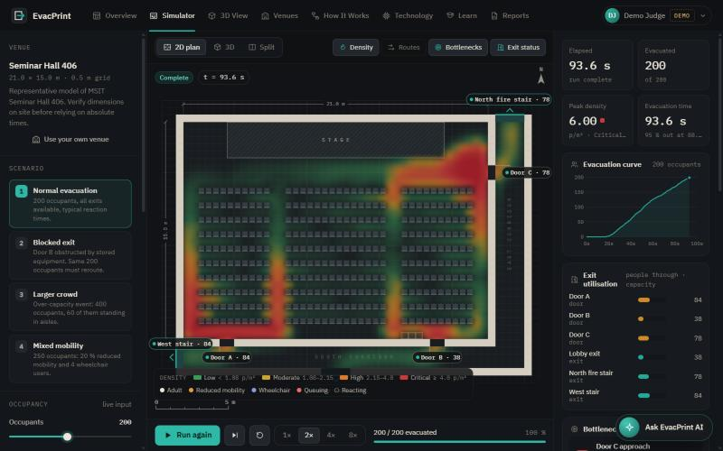
Verified against package.json, the imports in src/ and the server code. Nothing listed here is hypothetical.
| Technology | Where used | Why used | How it works in EvacPrint |
|---|---|---|---|
| HTML5 + CSS3 | Whole UI; src/styles/*.css | No framework overhead; full design control | Hand-written design system: CSS variables for the charcoal / warm-white / teal / amber / red palette, grid layouts, print styles for reports, reduced-motion support. |
| JavaScript (ES modules) | All of src/, server/, scripts/ | Same language in browser, workers and Node | About 13,000 lines across ~60 modules. A tiny hash router (src/main.js) lazy-loads each page. No React, no TypeScript. |
| Vite 5.4.10 | vite.config.js | Fast dev server and production build | npm run dev serves the app with hot reload; a Vite plugin mounts our /api/assistant handler in the dev server. npm run build bundles everything into dist/. |
| Own simulation engine | src/sim/engine.js, pathfinding.js, layout.js | Full control, explainable, runs anywhere | Agent-based model: Dijkstra distance fields, Weidmann speed–density, collision resolution, door capacity gates, density kernel, bottleneck detection. Pure JS with no DOM access. |
| Three.js 0.169.0 | src/render/view3d.js, overview hero, 3D tabs | Standard WebGL library | Extrudes walls, seats, stage and exits from the grid; draws agents with instanced meshes; OrbitControls for rotate/pan/zoom. Loaded lazily so pages without 3D stay light. |
| Canvas 2D API | src/render/floorplan.js, labs, venue editor | Fast drawing of hundreds of agents per frame | Cached linework layers + per-frame density heatmap, agents, queues and markers, interpolated between 0.1 s steps. |
| SVG | src/render/charts.js, explainers, illustrations | Crisp, light, printable | Our own small chart code (no Chart.js): evacuation curve with tooltip, exit bars. Animated explainers and the 7 standalone illustrations are SVG. |
| Web Workers | src/sim/worker.js, batch.js, recommend.js | Run many simulations without freezing the UI | A pool of up to 4 workers runs headless simulations (benchmark, recommendations, what-ifs, reports). 30 runs ≈ 1.5 s. |
| IndexedDB | src/venue/store.js | Store large data (photos, plans) in the browser | Venues and their media blobs, per user, "stored in this browser". |
| localStorage / sessionStorage | src/auth/auth.js, src/reports/store.js | Simple persistence without a server | Demo accounts (hashed), sessions ("Remember me" uses localStorage, otherwise sessionStorage), saved reports. |
| WebCrypto (PBKDF2-SHA-256) | src/auth/auth.js | Never store plain passwords | 210,000 iterations, 16-byte random salt, timing-safe comparison. |
| pdfjs-dist 4.10.38 | src/venue/importers.js | Read PDF floor plans in the browser | Renders page 1 of the PDF to an image for calibration and tracing. |
| Browser media APIs | src/venue/capture.js, importers.js | Capture and import venue references | getUserMedia for the camera; a video element + requestVideoFrameCallback to extract 8 frames from MP4/WebM. |
| Web Speech + Web Audio API | src/assistant/assistant.js | Voice questions and spoken answers | SpeechRecognition (speech → text), speechSynthesis (text → speech), AnalyserNode for the live waveform. |
| Node.js | server/index.mjs, server/assistant.mjs, scripts/ | Keep API keys secret; tests | Production static server (port 4173) + /api/assistant (status, chat, blueprint) with request-size limits and a per-IP rate limit. scripts/sim-check.mjs runs the 4 scenarios in Node as a regression test. |
| Google Gemini API | server/gemini.mjs | Free-tier language + vision model | REST over fetch: streaming chat with function calling (the app's tools), and structured JSON output for blueprint drafting. Default gemini-3.5-flash-lite, automatic fallback to other free models, timeouts. |
| @anthropic-ai/sdk 1.8.0 | server/assistant.mjs | Optional paid provider | If ANTHROPIC_API_KEY is set, Claude is used instead of Gemini. Not used in our current setup. |
| Server-Sent Events | server → browser | Stream AI text as it is generated | The chat endpoint streams text chunks; the browser shows them live. |
| @fontsource IBM Plex | src/main.js | Consistent typography, works offline | IBM Plex Sans and Mono are bundled — no Google Fonts call at runtime. |
One grid, one engine, many views.
Everything except the AI path runs inside the browser. If the internet is down, only the AI assistant and AI drafting stop working.
createHall406(); a custom venue's shapes are converted by rasterize(). Both produce the same layout object: a grid of cell types + named openings + metadata.compile() derives passable cells, seat cells, standing cells and groups of door/exit cells with their widths.new Simulation(layout, params): agents placed on seats (seeded random shuffle), Dijkstra fields computed for every open exit.step() one or more times (depending on 1×–8× speed). Each step = 0.1 s of simulated time.summary() returns every number shown in the UI: RSET, t50, t95, peak density, exit counts, bottlenecks, curve, per-agent outcomes. analyzeRisk() turns it into findings.runHeadless() and post results back for ranking.Browser panel → POST /api/assistant/chat with the conversation + a JSON snapshot of the app state → our Node handler adds the system prompt (EvacPrint facts, safety rules) and tool definitions → Gemini streams back text and/or a function call (e.g. what_if) → the browser shows a confirmation card for actions that change anything → on Confirm, the browser executes the tool on a copy and sends the result back → Gemini explains the result. The API key never leaves the server.
| Folder / file | Contents |
|---|---|
src/sim/ | engine, pathfinding (Dijkstra), layout (Hall 406, candidates), scenarios, recommend, risk, worker, batch, controller, rng |
src/render/ | floorplan (2D), view3d (Three.js), iso, charts, colors |
src/pages/ | overview, simulator, view3dPage, venues, venueEditor, howItWorks, technology, learn, reports, profile, welcome, auth |
src/venue/ | model (shapes → grid, profiles), editor, capture, importers, quickbuild, wizard, store |
src/assistant/ | assistant panel, api client, context snapshot, tools, offline guide |
src/learn/, src/ui/, src/auth/, src/reports/ | explainers, labs, player; nav, icons, dialogs, illustrations; demo auth; report storage |
server/ | index.mjs (production server), assistant.mjs (API routes), gemini.mjs (Gemini client) |
scripts/ | sim-check.mjs (regression test), render-illustrations.mjs |
illustrations/ | 7 engine-generated SVG illustrations |
What each algorithm is, why we need it, how it works, where it lives, and an everyday example.
| Algorithm asked about | In EvacPrint? | Where / note |
|---|---|---|
| Dijkstra's shortest path | Yes — core | Multi-source Dijkstra distance fields, pathfinding.js |
| Agent-based simulation | Yes — core | engine.js |
| Density-based slowdown | Yes | Weidmann (1993) speed–density relation |
| Door capacity | Yes | Token-bucket gates, 1.33 p/s per metre |
| Crowd distribution / placement | Yes | Seeded shuffle of seats, standing cells, wheelchair bays; spawn areas in Venue Studio |
| Bottleneck detection | Yes | Threshold + exposure time + connected components |
| Heatmap generation | Yes | Gaussian kernel density estimate + smoothing |
| Recommendation logic | Yes | Candidate generation + multi-seed re-simulation + ranking |
| Breadth-First Search (BFS) | Not used | Dijkstra is used because diagonal steps and congestion make costs unequal. (Flood fill with a stack is used to group bottleneck cells and to fill enclosed floor areas.) |
| A* search | Not used | A* finds one path for one person. We need distances from every cell to every exit at once, which a single multi-source Dijkstra provides. |
What: the venue becomes a grid of 0.5 m × 0.5 m cells, each typed as outside, floor, wall, seat, obstacle, door, exit or stage. Why: every later computation (paths, density, 3D extrusion) needs a common, discrete map. Where: createHall406() in layout.js; rasterize() in model.js for custom venues. Example: like turning a photo into pixels — the plan becomes a mosaic where each tile says what is there. Hall 406 is a 52 × 39 cell grid.
What: Dijkstra's algorithm finds the lowest-cost path in a graph. We run it "backwards" from every cell of an exit at once (multi-source), so the result is a map giving every cell's cost to reach that exit.
Why: 200 people need routes simultaneously. One map per exit answers "which way, and how far?" for everyone in one pass.
How: start with the exit cells at cost 0 in a min-heap. Repeatedly take the cheapest unsettled cell and relax its 8 neighbours: straight step 0.5 m, diagonal 0.5·√2 ≈ 0.71 m — diagonals only if both side cells are open (no corner cutting). Cells next to walls cost ×1.25, so people keep a little distance from walls. Every 2 s the costs are multiplied by a congestion factor (1 + 0.45·density), so routes bend away from queues.
Use: each agent walks "downhill" along the field's gradient (interpolated between cells for smooth motion).
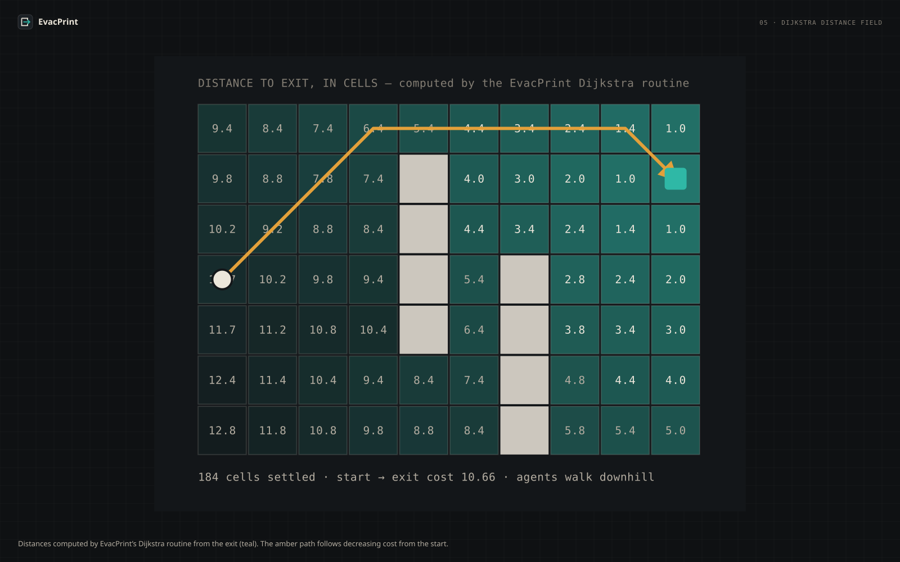
// simplified from src/sim/pathfinding.js function distanceField(grid, exitCells, congestion, wallPenalty) { dist = Infinity for every cell; heap = MinHeap() for (c of exitCells) { dist[c] = 0; heap.push(0, c) } while (heap not empty) { [d, c] = heap.pop(); if (d > dist[c]) continue // stale entry for (n of 8 neighbours of c that are passable) { if (diagonal and a side cell is blocked) continue // no corner cutting step = (diagonal ? 0.5*√2 : 0.5) * congestion[n] * wallPenalty[n] if (d + step < dist[n]) { dist[n] = d + step; heap.push(dist[n], n) } } } return dist // metres-equivalent cost from every cell to this exit }
Each moving agent compares the cost of every open exit from its current cell and picks the lowest. To stop people flip-flopping between two doors, it only switches if the new exit is clearly better: at least 15 % cheaper and 1.5 m shorter (chooseExit()). In Venue Studio, wheelchair users ignore exits marked not step-free (if an accessible one is reachable), and occupants unfamiliar with the building add a 4–18 m penalty to every exit except the main entrance (smaller penalty with good signage). Example: you will not walk to a farther door just because it is 20 cm shorter, but you will if the near door has a long queue.
What: instead of treating the crowd as a fluid, every person is a separate "agent" with their own properties and state.
Properties: free walking speed (adults 1.34 ± 0.15 m/s, clipped 1.0–1.6; reduced mobility and wheelchair 0.7–1.0 m/s), body radius (0.22 m adult, 0.23 m reduced mobility, 0.36 m wheelchair), reaction time (default 10–30 s), target exit, category.
States: Waiting (reacting to the alarm) → Moving (walking or queuing) → Evacuated (exit time logged), or Trapped if no exit is reachable.
Why: individual differences (a slow person in a narrow aisle) create the real-world effects we want to measure.
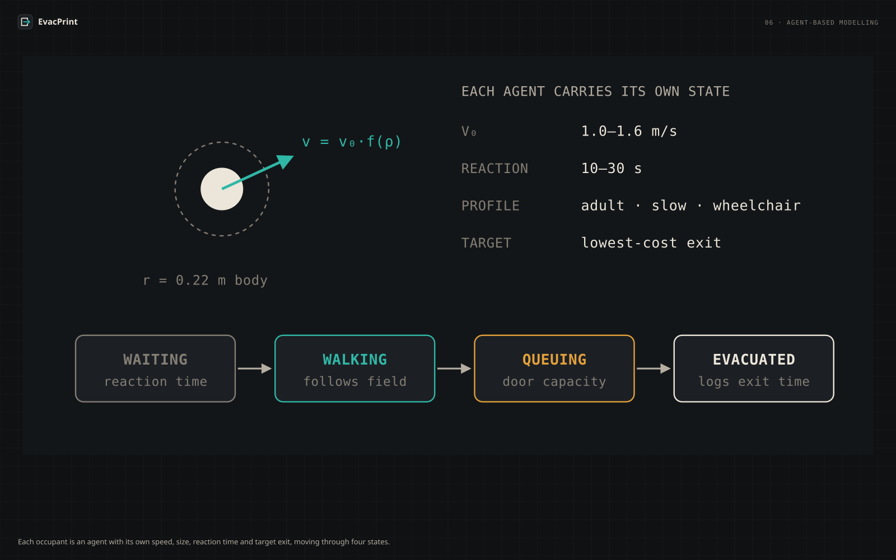
Every 0.1 s each moving agent: (1) reads the direction from its exit's field; (2) measures the crowd density around it (excluding its own contribution); (3) computes desired speed = free speed × Weidmann factor (never below 6 % so nobody freezes completely); (4) adjusts its velocity smoothly towards the desired one with a 0.5 s relaxation time, like a person accelerating rather than teleporting. Under panic, desired speed is multiplied by (1 + 0.3 × panic).
People are discs that may not overlap. After moving, agents are put into grid "buckets"; for each nearby pair that overlaps, both are pushed apart (moving agents more than seated/waiting ones). This is done in three passes per step (Gauss–Seidel style) so bodies stay separated and densities saturate near the physical limit. Agents are also pushed out of walls and furniture. Example: like marbles in a tray — shaking them makes them settle without overlapping.
Each door/exit has a "bucket" that refills at width × 1.33 tokens per second (SFPE specific flow) and holds at most 1 token. An agent stepping into an opening it has not passed yet needs a token; if none is available, it steps back and waits (shown red, counted in the queue). Example: a turnstile that lets one person through every 0.75 s for a 1 m door. Doubling the width doubles the refill rate.
Faster-is-slower (panic clogging): when panic > 0 and the density in front of the door exceeds 2.5 p/m², the refill rate is reduced by up to 45 % × panic — a simplified (phenomenological) version of the clogging effect described by Helbing et al. (2000): rushing crowds jam doors.
For every moving agent, the engine adds a small Gaussian "bump" (radius R = 0.7 m, total volume 1 person) to the cells around it. Summing all bumps gives a smooth density field in persons/m². This is smoothed over time with a 1 s exponential moving average so the heatmap does not flicker, and each cell's highest value ("peak map") is kept for the end-of-run heatmap. Colours follow Fruin's walkway levels of service: Low < 1.08, Moderate 1.08–2.15, High 2.15–4.0, Critical ≥ 4.0 p/m².
Live markers during the run use the same grouping on the current smoothed density (cells now ≥ 2.15 p/m²), without the 3-second rule.
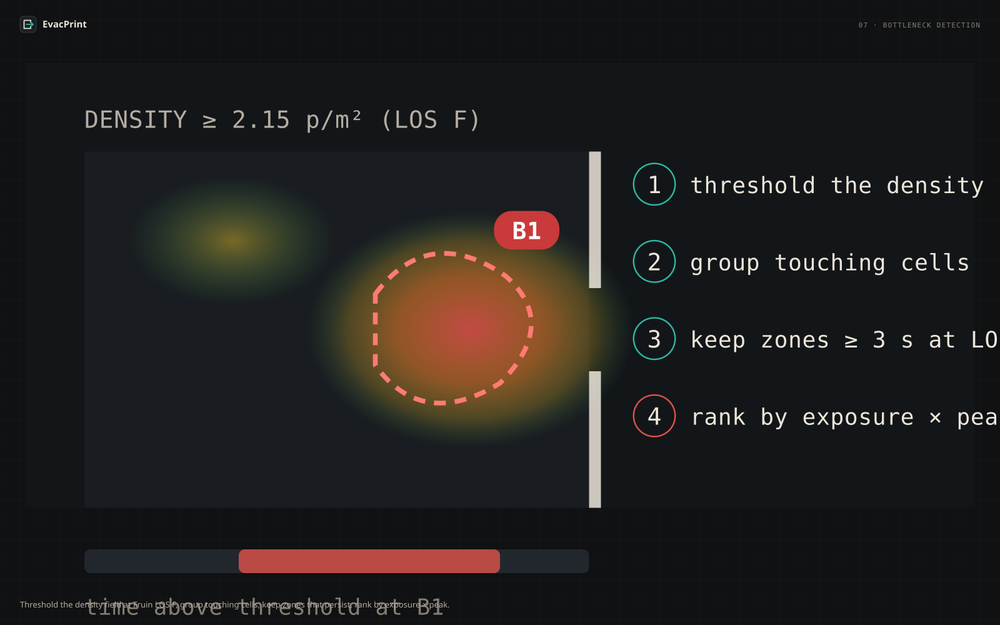
After a run, analyzeRisk() applies transparent rules to the measured result: density zones (high if peak ≥ 4 p/m²), exits whose peak 5-second discharge reaches ≥ 85 % of capacity with ≥ 10 users, closed openings and hazard zones, narrow busy passages (< 1.2 m), unbalanced exit use (one exit carrying > 1.6× its fair share), wheelchair users stuck or among the last 10 % out, people not evacuated, longest travel distance vs a 45 m reference, and delayed areas (mean exit time > 1.35× overall).
rng.normal), clipped to plausible ranges.Only formulas that are actually in the code. Each comes with variables, units and a worked example.
v walking speed (m/s) · v₀ the agent's free speed (m/s) · ρ local density (persons/m²) · γ = 1.913 (dimensionless fit constant) · ρmax = 5.4 p/m² (density at which walking stops). For ρ ≤ 0.05 the factor is 1; for ρ ≥ 5.4 it is 0; the engine never lets it drop below 0.06.
Effect: the denser it gets, the slower everyone walks — which is why queues form and grow.
Q maximum flow through an opening (persons/s) · qs specific flow · W clear width (m).
ρ(c) density at cell centre c (persons/m²) · d distance from the agent to the cell centre (m) · R kernel radius (m). Each agent contributes a smooth bump that integrates to 1 person.
Each step moves the smoothed value ρ̄ about 9.5 % of the way towards the instantaneous value ρ — like a 1-second "memory". Prevents flicker and one-frame false alarms.
Cells with crowds become "more expensive" in the Dijkstra field, so agents may re-route to a less busy exit. Panicked crowds re-route less (k smaller).
vdes = direction × v₀ × (1 + 0.3·panic) × Weidmann factor. With Δt/τ = 0.2, each step closes 20 % of the gap between current and desired velocity.
Default rmin = 10 s, rmax = 30 s. Averaging two random numbers makes middle values more likely than extremes. Reduced-mobility and wheelchair users get m = 1.15 by default; the wizard sets profile-specific multipliers (e.g. staff 0.5, seniors 1.2).
ρfront = highest density within 1 m in front of the opening.
RSET (Required Safe Escape Time, as used in fire engineering) is measured, not calculated by a formula: the engine logs every person's exit time; RSET is the largest. If someone is still inside at the 600 s limit, RSET is reported as incomplete. Also reported: mean walking time and mean queuing time.
Straight moves cost 0.5 m (one cell). The wall penalty makes routes keep a little distance from walls, as people do.
Read this chapter aloud to each other once. If you can explain it this simply, you can answer any judge.
We tell it. The hall is drawn as a chessboard of small squares, each 50 cm × 50 cm (about one person's shoulder width). Some squares are seats, some are walls, some are floor, some are doors. When a simulation starts, the computer places each virtual person on a seat square — shuffled randomly but reproducibly, using a "seed" number (406 by default), like shuffling a deck of cards in exactly the same way every time. If there are more people than seats, the rest stand in aisles.
Exits are special squares on the chessboard, drawn by us (Hall 406) or by the user (Venue Studio). Each exit has a name and a width. Doors (A, B, C) lead from the hall to the corridor; final exits (Lobby exit, North fire stair, West stair) lead out of the building. A person is "evacuated" only when they pass a final exit.
Imagine you pour water at the exit and it spreads backwards through the hall, square by square, around walls and seats. Every square remembers how far the water had to travel to reach it. That gives a number on every square: "you are 12.4 m from the North fire stair". This is Dijkstra's algorithm. We do it once for every exit.
Each person looks at the numbers around them and steps towards smaller numbers — like a ball rolling downhill. They choose the exit with the smallest number from where they stand. Every 2 seconds the numbers are recalculated with crowds counted as "uphill", so if a door has a big queue, people further away may choose another door — just like real people do.
Because real people don't. When the alarm rings, each virtual person waits a personal reaction time (by default somewhere between 10 and 30 seconds) — finishing a sentence, grabbing a bag. Then they stand up and walk at their own speed: a typical adult about 1.34 m/s; someone with reduced mobility or in a wheelchair 0.7–1.0 m/s.
A 1-metre door can let through only about 1.33 people per second — one person every 0.75 seconds. If people arrive faster than that, the extras must wait. The waiting people form a curved queue (an "arch") in front of the door. Inside a crowd people also walk slower: the more people per square metre, the shorter your steps. At 2.15 people per square metre, people already walk at less than half their normal speed. So a narrow door causes a queue, the queue causes high density, and high density slows everyone down further.
Every tenth of a second, the computer counts how crowded each square is (people per square metre). If a square stays above 2.15 people/m² — what crowd scientist John Fruin called "Level of Service F", the worst level — it starts a stopwatch for that square. After the evacuation, squares that were critical for at least 3 seconds and touch each other are grouped into a zone, given a name like "Door C approach", and ranked by how bad and how long. That zone is a bottleneck.
If Door B is blocked, it becomes a wall. The distance numbers are recalculated without it, so the 38 people who would have used Door B (and then the Lobby exit) now walk to Doors A or C instead. Those queues get longer. In our model the evacuation goes from 93.6 s to 110.5 s — about 17 seconds slower — and the Lobby exit is not used at all, because the only way to it was through Door B.
EvacPrint tries changes for you: wider doors, an extra exit, moving the AV console, wider aisles, a shorter stage, removing a seat row. For each one it runs the whole evacuation again, three times with three different random crowds, and measures the saving. With Door B blocked, adding a 1-metre emergency exit on the west wall saves about 29 seconds on average — more than even clearing Door B (≈ 13 s), because it opens a brand-new route right where the crowd is. That is the kind of insight a static plan cannot give you.
An animation is drawn in advance — it always looks the same. EvacPrint calculates every person's position every 0.1 seconds from rules. Change one number (block a door, add 100 people, raise panic) and the outcome changes, and the timings are measured, not drawn. The 3D view and the 2D plan are just two cameras pointing at the same calculation.
A digital twin is a virtual copy of a real place that you can experiment on. Our Hall 406 model and any venue built in Venue Studio are simple digital twins: you can block exits, change crowds and redesign the room without touching the real building. (A full industrial digital twin would also be fed live sensor data — that is future scope for us.)
Plain-language definitions, with how each term appears in EvacPrint.
/api/assistant; our server calls the Google Gemini API.A tested path through features that work reliably. Expected numbers were measured on 17 Nov 2026 with seed 406.
npm run dev. Use the URL it prints (for example http://localhost:5173 or 5174).| Moment | What you should see |
|---|---|
| Normal, end of run | RSET 93.6 s, 95 % at 88.6 s, peak 6.00 p/m², B1 = Door C approach, B2 = Door A approach. Exit counts: Door A 84, Door B 38, Door C 78, Lobby 38, North fire stair 78, West stair 84. |
| Blocked exit, end of run | RSET 110.5 s (curve shows "Previous run (94 s)"), peak 6.16, Lobby exit 0, Door C 101, Door A 99. |
| Suggest improvements (Blocked) | 30 runs in ~1.5 s · Baseline mean of 3 seeds ≈ 112.4 s · #1 Add a 1.0 m emergency exit on the west wall −28.7 s · #2 Clear the obstruction at Door B −13.0 s · #3 Widen Door A −7.7 s. |
| Apply & compare (#1) | RSET 110.5 → 83.3 s (−27.2 s), 95 % 106.0 → 78.8 s, peak 6.16 → 5.92, mean queuing 36.1 → 21.0 s; across 3 seeds saves 25.0–33.8 s. New exit used by 78 people. |
| (Optional) Suggest on Normal | #1 west exit −17.3 s, #2 widen Door A −14.3 s, #3 widen Door C −2.8 s "Targets worst bottleneck". |
| # | Click / show | What happens on screen | What judges should notice · concept · how to explain |
|---|---|---|---|
| 1 | Tab ① Overview | 3D hall with moving people; "LIVE ENGINE" panel counting time and evacuated | It is computed live, not a video. Concept: agent-based simulation. "Every figure is a person being simulated right now." |
| 2 | Tab ② Simulator → Run (Normal, 4×, Split) | Grey seated people for ~10–30 s, then white walkers; red queues form at doors; B1/B2 markers appear | Reaction time, Dijkstra routing, door capacity. "Grey means still reacting; red means queuing at a door that can pass only 1.33 people per second." |
| 3 | Point at heatmap, Bottlenecks, Exit utilisation | Red arch at Door C approach; "Door C · 78" | Density, Fruin LOS F, bottleneck detection. "Above 2.15 people per square metre walking speed halves." |
| 4 | Read KPIs when complete | Evacuation time 93.6 s, 95 % at 88.6 s | RSET is measured: last person out. |
| 5 | Scenario Blocked exit → 8× → Run | Door B shows BLOCKED (red); Lobby exit stays 0; RSET 110.5 s; curve overlays previous run | Re-routing: distance fields recomputed without Door B. "One blocked door costs 17 seconds." |
| 6 | Suggest improvements | "30 runs · ~1.5 s", ranked list with "Helps on every seed" | Recommendation engine, Web Workers, 3 seeds. "It ran the whole evacuation 30 times in about a second and a half." |
| 7 | #1 → Apply & compare; toggle Swipe | Before/after: 110.5 → 83.3 s; two heatmaps; exit table | Fair A/B test, same people same seats. "Adding one exit beats even clearing Door B." |
| 8 | Close; press Original in Layout | "Original layout — no design changes applied." | Housekeeping — Apply & compare changes the working layout. |
| 9 | Tab ④ Venues → Quick room from measurements (no AI) → 16 × 11 m, 2 front exits → Build blueprint & 3D model → Preview evacuation | Blueprint + 3D model of a new 144-seat room; evacuation plays | Any venue, offline, same engine. "If you have a tape measure, you have a digital twin in 30 seconds." |
| 10 | Tab ③ Report → scroll; Print / save PDF (cancel the dialog) | Summary paragraph, KPIs, tables, recommendations, method & limitations | Output for administrators; honest limitations paragraph. |
| 11 net | Ask EvacPrint AI: "Where is the worst bottleneck in this run, and why does it form there?" | Answer citing Door C, 6.0 p/m², 1.33 p/s, 78 people | Grounded AI: it reads the real run data. Actions need Confirm. Optional — skip if offline. |
| If… | Do this (calmly — say what you are doing) |
|---|---|
| The internet stops working | Nothing changes except AI. The simulator, 3D, recommendations, Venue Studio (except AI drafting) and reports all run locally. Skip step 11 and say: "The AI assistant needs internet; the simulation itself runs fully offline." |
| The simulation feels slow | Switch to 8×. Or skip straight to Suggest improvements — it does not need a finished live run. Or show the Overview benchmark (4 scenarios computed in under a second). Or open the pre-generated report. |
| The 3D model does not load | Switch the Simulator to 2D plan — all analytics still work. If WebGL is unavailable the app shows a message instead of 3D. As a last resort show the 3D screenshots in this handbook. |
| An upload fails | Do not debug on stage. Use the Quick room builder or "Start from a lecture-room template". (DWG is intentionally not supported — export DXF/PDF.) |
| The AI assistant does not respond | Wait 10 s once. If it shows an error ("free-tier limit" or "overloaded"), say: "We use Gemini's free tier, which is rate-limited — the simulation does not depend on it." Close the panel and continue. |
| A button stops working | Reload the page (F5). Your demo sign-in persists in the same tab. Use the pre-opened tabs. If the page is blank: in the terminal press Ctrl+C, run npm run dev again, reload. |
| Wrong state after Apply & compare | Press Original in the Layout panel, then pick the scenario card again. |
| 3D View page shows Door B "blocked" after switching back | Known label quirk on the 3D View page dropdown. Change scenarios on the Simulator page instead, or reload the 3D View page. |
| Laptop or projector fails completely | Present from this PDF (chapter 4 and 11 screenshots) and the printed report. |
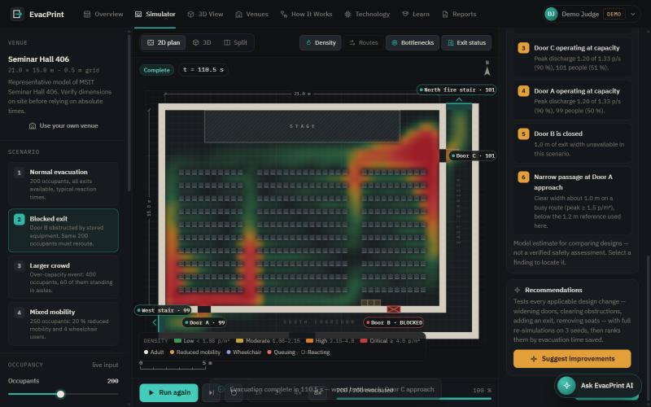
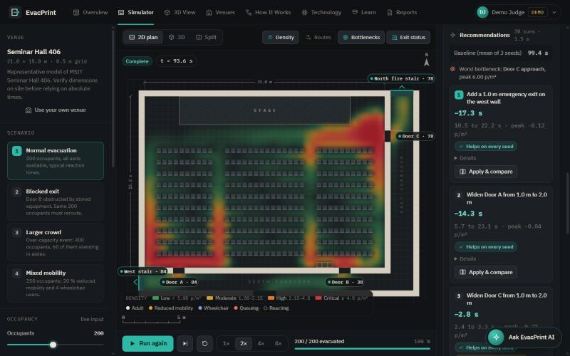
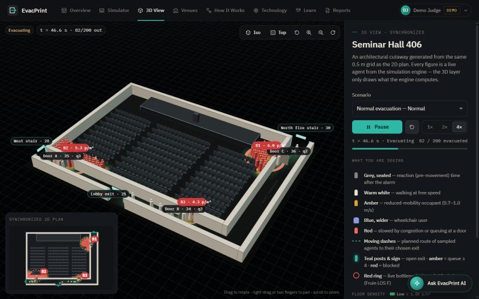
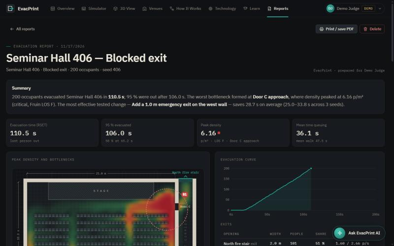
About 9 minutes. Synchronized with the real interface. Both presenters speak in every scene except the demo halves, where one speaks while the other drives.
| Scene | Main speaker(s) | At the laptop | Time |
|---|---|---|---|
| 1 Opening | Tishank → Navya | — | 0:45 |
| 2 Problem | Navya → Tishank | — | 1:00 |
| 3 Solution | Tishank → Navya | Navya (Overview tab) | 0:45 |
| 4A Demo: simulation | Tishank | Navya | 2:00 |
| 4B Demo: recommendations, own venue | Navya | Tishank | 2:00 |
| 5 Architecture & tech | Navya → Tishank | — | 1:15 |
| 6 Innovation | Tishank | — | 0:40 |
| 7 Applications & future | Navya | — | 0:40 |
| 8 Conclusion | Tishank → Navya → both | — | 0:30 |
| Total | ≈ 9:35 |
Preparation note: stand on either side of the laptop so swapping who drives takes two seconds. Speak to the judges, not to the screen. Words in highlight are the lines to stress.
Use when judges say "you have three minutes". One live action only: Normal run already finished, then block Door B and suggest improvements.
Total ≈ 2:45 plus clicks.
38 likely questions in 8 categories. Say = short confident answer · Deeper = follow-up detail · Don't claim = what would be untrue.
npm run build) served by a small Node server. Next: host it, add a real database and login, team sharing of venues, and partner with a college for a validation drill.Knowing these by heart is a strength, not a weakness.
| Limitation | Detail |
|---|---|
| Single floor only | Stairs and ramps are slow floor zones (×0.6 adults, ×0.12 wheelchair users); no multi-storey flow. |
| No fire / smoke physics | No fire growth, smoke movement, heat or toxicity, so no ASET. Hazard zones are static. |
| Simplified behaviour | No families or groups staying together, no helping behaviour, no leaders/followers; caregivers are not kept beside the person they assist. |
| No physical crush forces | Densities are measured, but forces on bodies are not modelled. |
| Planning-value parameters | Walking speeds, door flow (1.33 p/s/m), reaction times and environment multipliers are literature/planning values, not calibrated to Indian college crowds. |
| Hall 406 is representative | Dimensions not measured on site. |
| Grid resolution 0.5 m | Door and exit widths are effectively multiples of 0.5 m; very narrow features are approximated. |
| Large crowds | ~900 people is fast; at ~3,000 a few agents may not finish within 600 s; 10,000 is untested. |
| Imports | Wall tracing cannot detect doors; DWG not supported; PDF imports page 1 only; DXF supports lines, polylines and arcs. |
| AI | Needs internet and an API key; free tier is rate-limited; drafts from photos are estimates. |
| Voice and camera | Implemented with browser APIs but not tested on the presentation hardware. |
| Accounts and storage | Local to one browser; no cloud sync or multi-user sharing; demo authentication only. |
| Known UI quirk | 3D View page: Door B label can stay "blocked" after switching scenario via that page's dropdown. |
Clearly separated from what exists today. Present all of this as "next steps".
| Horizon | What we would build | Why |
|---|---|---|
| Next 3 months | Validation drill in Hall 406; measure the real hall; multi-floor venues with stair flow; fix large-crowd edge cases; group behaviour | Credibility and real buildings |
| 6 months | Hosted version with real accounts and a database; team sharing of venues; export to PDF/CSV for audits; NBC 2016 travel-distance and exit-width checklists as references | Make it usable by institutions |
| 1 year | Couple a fire/smoke model to compute ASET vs RSET; live occupancy from Wi-Fi counts, ticket scans or door sensors (a true live digital twin); signage and wayfinding optimisation | From planning to operations |
| Beyond | Hospitals (bed/stretcher evacuation, staff-assisted), malls and stations (large crowds, multiple floors), event venues (dynamic crowd limits) | New domains need new behaviour models |
| Sector | Can do with the current prototype | Needs future work |
|---|---|---|
| Educational institutions | Seminar halls, classrooms, labs (single floor): blocked-exit tests, seating and crowd limits, mixed-mobility planning | Whole multi-storey buildings |
| Auditoriums | Seating layouts, aisle widths, exit additions, over-capacity scenarios | Balconies (multi-level) |
| Event venues | Crowd-size what-ifs, standing crowds, door planning | Outdoor open areas, live crowd feeds |
| Offices | Single-floor layouts, furniture blocking routes | Stair cores for high-rise |
| Public buildings | Single-floor halls, blocked-route analysis | Multi-level, large crowds |
| Shopping malls | A single floor zone as a study | Multiple floors, escalators, thousands of people |
| Hospitals | Basic layout studies only | Bed-bound and assisted evacuation, horizontal phased evacuation |
On the presentation laptop, in the project folder.
| Command | What it does |
|---|---|
npm install | Once, to install dependencies (needs internet; already done). |
npm run dev | Starts the development server. Open the URL it prints (usually http://localhost:5173; if that port is busy, Vite uses 5174). Includes the AI endpoint. |
npm run test:sim | Runs the 4 scenarios in Node. Expected RSET: Normal 93.6 · Blocked 110.5 · Larger 164.9 · Mixed 113.9 s. |
npm run build then npm start | Production build and server on http://localhost:4173 (also serves the AI endpoint). |
npm run illustrations | Regenerates the 7 SVG illustrations from the engine. |
.env.local in the project folder holds GEMINI_API_KEY=… (free key from Google AI Studio). It is read only by the server and never committed or sent to the browser. Restart npm run dev after changing it. Without it, the assistant shows a setup card and the offline guide.Tick these tonight and again 30 minutes before presenting. A separate one-page version is in EvacPrint_Last_Minute_Rehearsal_Checklist.pdf.
npm run test:sim — 93.6 / 110.5 / 164.9 / 113.9npm run dev running; URL opens